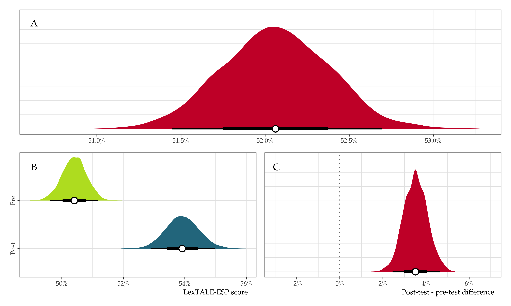
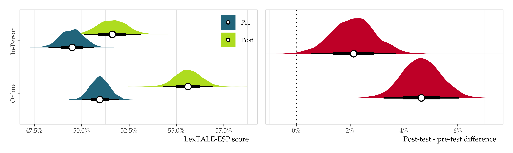
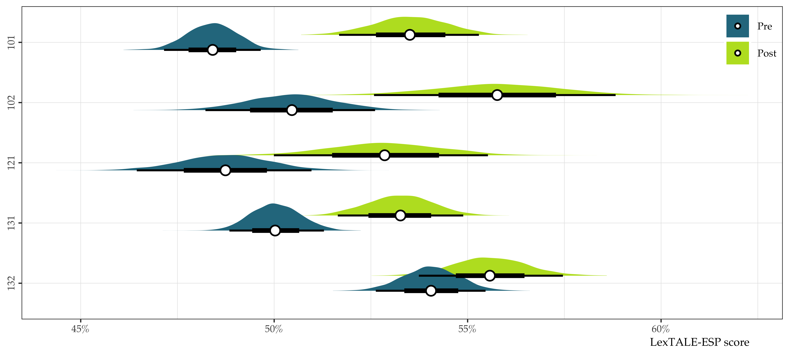
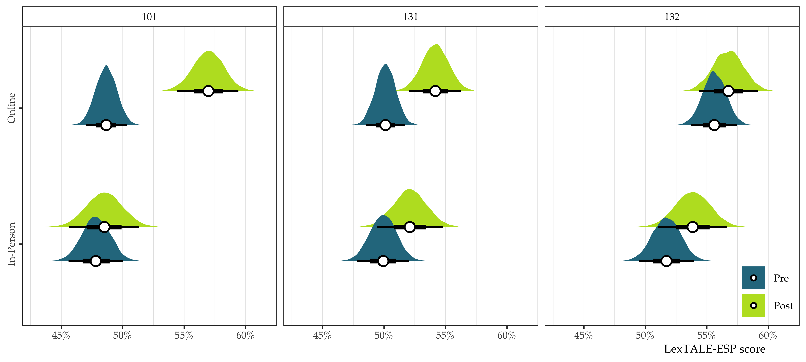

Department of Spanish and Portuguese
2025-2026 assessment
Note
At the beginning of each section a box like this will appear containing the prompt/question provided by SAS.
1 Learning goals
Learning goals for the Department of Spanish and Portuguese can be found on our department webpage:
- Spanish: https://span-port.rutgers.edu/learning-goals
- Portuguese: https://span-port.rutgers.edu/portuguese-learning-goals
1.0.2 Spanish-specific learning goals
- Spanish majors who choose electives in Linguistics will also be able to demonstrate familiarity with basic concepts of Linguistics, in particular with issues related to language contact and bilingualism and bilingual education, and be able to design and implement a research project.
- Spanish majors who choose electives in Translation/Interpreting will also be able to demonstrate proficiency at the levels required by pre-professional and professional training for employment in legal, medical, commercial translation and in other areas; and further study in law, medicine, editing/journalism, and business, as well as graduate studies in both linguistics and literature.
- Spanish majors who choose electives in Literature and Culture will also be able to demonstrate knowledge of current issues and perspectives in literary and cultural studies in Spanish and the basic body of works in Spanish literature and culture; critically analyze verbal and visual texts; demonstrate familiarity with a range of cultural works from different time periods and geographical regions within the Spanish-speaking world and with the historical phenomena and socio-cultural issues that these works negotiate.
- The top 15% of majors will be prepared for acceptance to graduate programs in Spanish.
- Minors in Spanish will be able to demonstrate a level of language proficiency that allows basic conversations on a variety of uncomplicated topics, with basic command of the language, and some spontaneous creative ability; and basic familiarity with the main cultural, literary and linguistic issues of the Hispanic or Luso-Brazilian world.
1.0.3 Portuguese-specific learning goals
- Portuguese majors will also be able to demonstrate knowledge of current issues and perspectives in literary and cultural studies in Portuguese and the basic body of works in Luso-Brazilian literature and culture; critically analyze verbal and visual texts; demonstrate familiarity with a range of cultural works from different time periods and geographical regions within the Portuguese-speaking world and with the historical phenomena and socio-cultural issues that these works negotiate.
- The top 15% of majors will be prepared for acceptance to graduate programs in Portuguese.
- Minors in Portuguese will be able to demonstrate a level of language proficiency that allows basic conversations on a variety of uncomplicated topics, with basic command of the language, and some spontaneous creative ability; and basic familiarity with the main cultural, literary and linguistic issues of the Hispanic or Luso-Brazilian world.
Of the 49 syllabi scrutinized from the fall and spring semesters of the 2025-2026 academic year, 100% included appropriate learning goal statements and 81.63%—the overwhelming majority—also included a direct link to the complete learning goals on the department website.
Mastery of a novel or family language does not take place in a single course. For our learners beginning without prior experience, the elementary (101, 102) courses are critical for initiating them in the basics of the present tense and developing skills for intercultural communication. These courses plant the seeds that will eventually allow dedicated students to demonstrate proficiency in various modes of communication, carry out conversations with non-sympathetic listeners, and demonstrate intercultural awareness. In addition, many students come to our program with prior experience, either via previous coursework or familial experience, and are placed accordingly. Importantly, the type of multifaceted knowledge our students obtain is developed over the course of the major/minor, regardless of where a given student begins.
As mentioned above, our students are expected to read and write documents written in academic, formal and/or literary registers of the language. These skills are developed from the early stages of the program and are given special attention in our 202, 203, and 204 courses (Culture and Composition for Heritage Speakers, Spanish Conversation and Composition, and Culture and Composition, respectively). From there, students can take one of our gateway courses on literature, linguistics, or translation (more below) to begin developing academic writing skills in a specialized area, and also continue to 325/326 (Advanced Grammar and Composition, Advanced Composition and Introduction to Translation Studies). From this point forward, most 300/400-level courses will also require substantial academic writing.
For students focusing on linguistics, cultural studies or translation, our gateway courses (215, 261, and 326, respectively) provide a solid foundation for each area. This foundation is solidified and expanded upon in subsequent 300/400-level courses in which students learn to conduct research projects following the methodologies of the humanities, social or cognitive sciences. From this point forward, students are expected to continue developing as researchers in all of their specialized courses.
2 Departmental assessment
2.1 Assessment topic
The question about student learning addressed by the Department of Spanish and Portuguese this year is a follow-up from our 2023-2024 academic year assessment. Specifically, our primary focus was on language learning outcomes across our basic language program (101, 102, 121, 131, 132). In addition, we examined how outcomes may differ as a function of learning modality (i.e., online vs. in-person). Like other departments, our courses were moved online as a consequence of the global pandemic. Since then, we have continued offering online classes as a complement to our in-person classes. A crucial question in language departments nationally revolves around the effectiveness of online teaching, particularly with regard to our aforementioned learning goals. To this end, we are interested in understanding more about the effectiveness of our online course offerings and the extent to which they are comparable to their in-person counterparts. As in 2023-2024, we decided to focus on the construct of language proficiency for our assessment. Our initial investigation included 160 learners from our basic language program. In revisiting the topic, we now expand our analysis to include 750 students. We believe an assessment of this nature can provide useful information to both the department and SAS.
It is important to note that, while we all have an intuitive understanding of what proficiency is, it is rather difficult to operationalize and measure. To wit, proficiency assessments typically involve formal language testing procedures and oral interviews. Understandably, a thorough assessment of this nature is costly regarding both time and money. An alternative method currently being used in some areas of linguistic research involves assessing learners on psycholinguistic tasks. The benefits of using tasks of this type are (1) they correlate with traditional measures of proficiency, (2) they are inexpensive, and (3) they can be administered in a short amount of time. To this end, we asked students in our basic language program to complete a lexical decision task (details below) during the first and last weeks of semester, beginning in the Spring of 2024. We anticipate students will obtain higher scores on the task at the end of the semester, ostensibly due to gains in proficiency over the course of the semester. Where possible, we compare modalities of the same course, that is, in-person vs. online, and, a priori, we have no expectations that there will be higher scores in one modality over the other. That being said, in our initial 2024 analysis of 160 learners, we found marginally higher improvement in the online courses. In what follows, we provide a detailed description of the task, the updated results, and possible implications for the department.
2.2 Methods
The Lexical Test for Advanced Learners of English (LexTALE, Lemhöfer & Broersma, 2012) is a vocabulary test that measures English proficiency by assessing vocabulary size through a lexical decision task. In the LexTALE, participants see 60 lexical items (40 words and 20 pseudowords) and indicate whether each item is an existing word in the English language or not by pressing a key. The pseudowords used in the test are orthographically and phonologically legal constructions in English. Participants are scored based on their accuracy accepting real words and correctly rejecting pseudowords. Response times are not measured. LexTALE scores range from 0 to 100.
The Lexical Test for Advanced Learners of Spanish (LexTALE-ESP, Izura, Cuetos, & Brysbaert, 2014) employs a similar methodology and design as the LexTALE, but it measures vocabulary size in Spanish. Participants see 90 lexical items (60 real words and 30 pseudowords) and indicate whether each item is a real word in Spanish. Scores in the LexTALE-ESP also range from 0 to 100. Completing the LexTALE/LexTALE-ESP takes approximately four minutes. Importantly, although the LexTALE was originally proposed as a test of lexical knowledge, many studies in SLA have used the LexTALE and LexTALE-ESP to operationalize language proficiency. At present, approximately 1,942 empirical studies have used the LexTALE and 295 have used the Spanish version, LexTALE-ESP. Anybody interested in trying the task can do so here.1
The Undergraduate Director, Language Coordinator, and instructors in the basic language program have asked students to complete the LexTALE-ESP task during the first week of classes and during the penultimate week of classes every semester since the Spring of 2024. Initially, instructors were provided flyers with QR codes and bitly links to the task, as well as an additional link available on the Canvas website of each course. After the first semester of testing, the task has been distributed exclusively through canvas and included as part of the basic language program curriculum.
2.3 Findings
From Spring 2024 to Spring 2026 (5 semesters), 941 students have enrolled in our basic language program. Of them, 750 unique individuals completed at least one session of the LexTALE-ESP lexical decision task (79.7% completion rate). Over this period, we administered 1,576 sessions of the task out of a possible 1,882 (941 enrolled students \(\times\) 2 sessions = 1,882). Across all semesters participation was strong initially (n = 840, 89.27%), but waned in the post-test phase (n = 736, 78.21%). We collected a total of 673 complete cases, i.e., pre- and post-test sessions completed by the same individual (673 complete cases \(/\) 941 enrolled students = 71.52%), though this number is inflated because many individuals completed the pre- and post-test multiple times in different courses. For instance, a given student could complete the LexTALE-ESP in 102, 131, and 132, providing data on 6 iterations of the task, but their ID registers them as one unique participant. All statistical analyses were conducted using data from students completing both phases of the task.
The overall average score on the task marginalizing over session (pre, post), modality (in-person, online), and course (101, 102, 121, 131, 132) was approximately 52.06% [51.41, 52.66] (See Figure 1, panel A). The average pre-test score was 50.40% [49.60, 51.16] and the average post-test score was 53.92% [52.82, 54.92], thus students showed marginal improvement overall, approximately 4%, by the end of the semester (See Figure 1, panels B and C).
When stratifying by modality, we observe an overall higher rate of improvement in the online courses, a trend that appears to have carried over from our initial assessment in 2023-2024 with much less data. Specifically, the average score for in-person classes at the beginning of the semester was 49.48% [48.24, 50.64] versus 51.61% [50.12, 53.11] at the end, representing an average gain of 2.13% [0.56, 3.71]. For online courses, the average beginning-of-semester score was 50.96% [50.03, 51.98] versus 55.61% [54.36, 56.97] at the end, a difference of 4.65% [3.32, 6.13]. Figure 2 provides posterior means along with 95% and 66% credible intervals for beginning-of-semester vs. end-of-semester scores for online vs. in-person courses (left panel), as well as the average posterior difference between modalities (right panel).

Next, we examined beginning versus end-of-semester scores for each class (See Figure 3). Unsurprisingly, one can observe lower average scores at the beginning of the semester in 101 and higher average scores in 132. The largest pre versus post difference was found for students in 102.

Finally, we compared beginning-of-semester versus end-of-semester scores as a function of modality for each in-person course that had an online counterpart (i.e., 101, 131, and 132; note that in the time period under scrutiny, 102 has only been offered online and 121 is only offered in-person). In all cases, post-test scores were higher, but larger gains occurred in online classes, particularly with regard to 101 and 131 (See Figure 4).

As we have seen thus far, proficiency gains as measured by the LexTALE-ESP were small, but overall positive. By exploring individual differences of complete cases, we observe that the majority of students do in fact improve over the course of a semester. Table 1 presents the number of students with increasing and decreasing scores in each modality, along with the overall rate of improvement. In short, nearly 57% of students scored higher on the LexTALE by the end of the semester, suggesting larger vocabulary sizes, and, in turn, higher proficiency in Spanish.
| Modality | Complete cases | Score decreased | Score increased | % improvement |
|---|---|---|---|---|
| In-Person | 300 | 130 | 170 | 56.67 |
| Online | 373 | 160 | 213 | 57.10 |
| Overall | 673 | 290 | 383 | 56.91 |
2.4 Implications
The LexTALE and the LexTALE-ESP are taken as general measures of vocabulary size, which correlates with language proficiency. In this assessment we have used the LexTALE-ESP as a proxy to measure proficiency in Spanish. The outlook obtained from the data in 2023-2024 was positive, and our larger sample size further substantiates our initial findings: the majority of students show improvement on the LexTALE-ESP over the course of one semester. The rate of improvement appears to be slightly higher in online courses. The LexTALE-ESP captures some degree of proficiency in Spanish and our students improve on the task over the course of a semester at all levels of the basic language program. We can say with confidence that the majority of students in online classes increase their proficiency, as measured by this task.
Having said all the above, the results should be interpreted with caution for several reasons. First, the overall amount of complete cases remains small. While it is tempting to conclude that the online courses have better outcomes than the in-person courses, it is noteworthy that there was a suspiciously large number of perfect scores in the online classes. To wit, monolingual Spanish speakers do not typically obtain perfect scores on this task. Put simply, more data is needed and a clearer message to students to conceive of the task as a useful assessment of their current level–as opposed to an assignment they have to do well on–would be helpful.
Second, the sections included in this assessment are all 100-level courses. In other words, all the participants are likely at the novice-low to novice-mid level, thus large proficiency gains should not be expected. Interestingly, the largest pre- versus post-test difference we observed was for students in 102 (Elementary Spanish II). Somewhat counterintuitive to expectations, scores from 121 fell somewhere between those of 101 and 102. This may be explained by the fact that 121 is a “review and continuation” course for students that have taken Spanish in the past, but may be rusty. It is not available to students who have taken the 101/102 sequence. In short, it is possible that students taking 102 after having completed 101 start with a higher proficiency level than students placed into 121. This information is useful when setting learning goals for both classes.
Additionally, it seems feasible to assume that more progress may be made in general proficiency at the 200 or 300 levels, which we are not currently testing. It is also possible that any modality effects can differ at different stages of the program and/or different stages of learning. The decision to start our assessment in the basic language program was a practical one. The basic language program has a language coordinator that is in constant contact with the instructors teaching these courses (typically graduate student TAs), which facilitates recruitment. While testing in courses at the 200-400 levels would surely be helpful, the necessary infrastructure and coordination to administer the LexTALE-ESP and subsequently collect the data is lacking.
Finally, our assessment of proficiency is useful, but surely leaves out many critical components of this complex construct. For instance, a task of this nature cannot tell us anything about intercultural competence, which is also a key part of the departmental learning goals. Nonetheless, the LexTALE-ESP has been found to be serviceable by many researchers and more and more language departments are beginning to use it for placement and assessment purposes.
The results we have obtained support the Department’s decision to broaden our online course offerings in Spanish and Portuguese (e.g., 121). As the amount of data we have grows, we will expand our analyses to include longitudinal assessments of our majors and minors. This will allow us to uncover specific time points/courses in which major proficiency gains occur, as well as model different learning trajectories for our students. A complete version of this updated report will be made available to all faculty and the results/implications will be considered in a future department meeting.
3 References
Izura, C., Cuetos, F., & Brysbaert, M. (2014). Lextale-esp: A test to rapidly and efficiently assess the spanish vocabulary size. PSICOLOGICA, 35(1), 49–66.
Lemhöfer, K., & Broersma, M. (2012). Introducing LexTALE: A quick and valid Lexical Test for Advanced Learners of English. Behavior Research Methods, 44(2), 325–343. http://doi.org/10.3758/s13428-011-0146-0
Footnotes
Note: please enter ‘test’ for all of the required information, e.g., RUID = ‘test’.↩︎